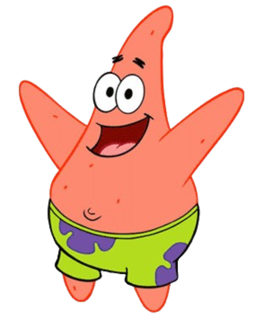

ORIGEM DA CRIAÇÃO: Patrick foi projetado para representar a "inocência" e o humor físico, contrapondo situações cotidianas com sua falta de inteligência;
PERSONALIDADE: É caracterizado como leal, porém muito preguiçoso e com pouca capacidade de raciocínio, muitas vezes esquecendo fatos simples;
VIDA E MORADIA: Vive embaixo de uma rocha, sendo retratado como alguém que "vive debaixo de uma pedra" (uma paródia de não entender o que acontece ao redor);
TRABALHO: Embora prefira não trabalhar, já teve passagens curtas e atrapalhadas pelo Siri Cascudo;
O SHOW DO PATRICK ESTRELA: Ganhou sua própria série derivada, focada em sua família e em um formato de programa de variedades;
CURIOSIDADE: É um equinodermo, o que na vida real significa que ele tem o corpo coberto por pequenos pés tubulares para se mover e capturar presas.
